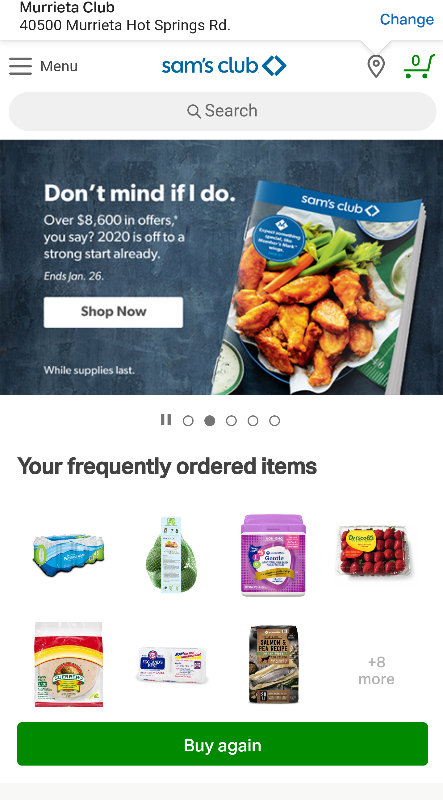
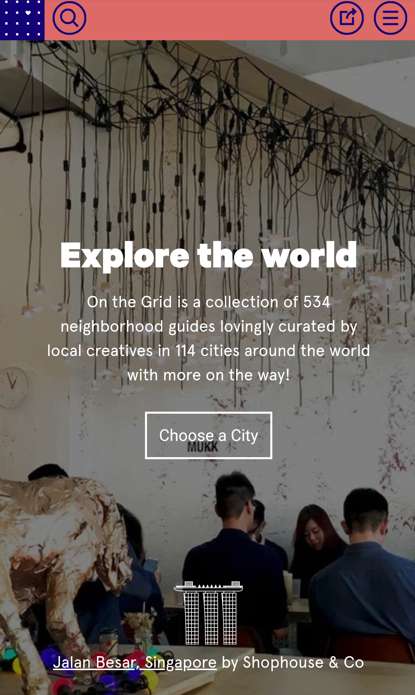
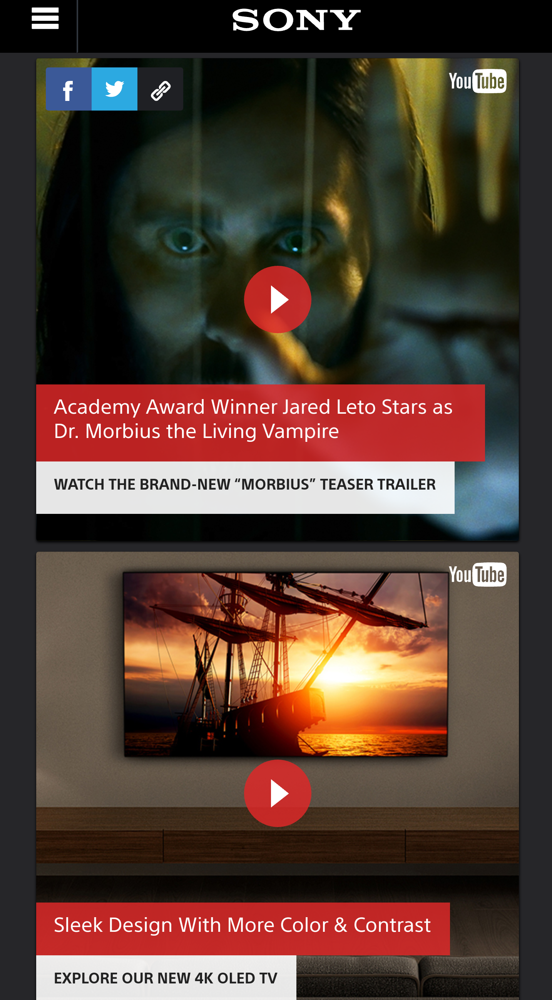

Repetition
Sam's Club
Sam's Club Sam's Club used perfect ad repetition to advertise new items for sale and to advertise items on sale.Repetition can catch a readers attention and draw them to click on what is being displayed. It is important that repetition is not over used. Redundancy can be tiresom and cause bordeom. Sam's Club used it to positively help the viewer feel welcomed to clicking on their products.
Contrast
On The Grid
On The Grid On The Grid is a website that uses vibrant colors to bring attention to their services. They offer a wide variety of city tours that grab your attention with eye popping visuals and colors. The colors are not too bright or washed out. They are a perfect blend to sooth your mind and feel welcomed. This makes it very easy to read and browse their website for information.
Proximity
Sony
Sony USA Sony uses a great example of proximity. They deliver a strong group of different articles and links to entertainment they offer. As you can see, the main page to the website presents several options to choose from within a close procimity. This makes it easy for the viewer to decide on what they want to view. The placement of each item is strong and divrse.